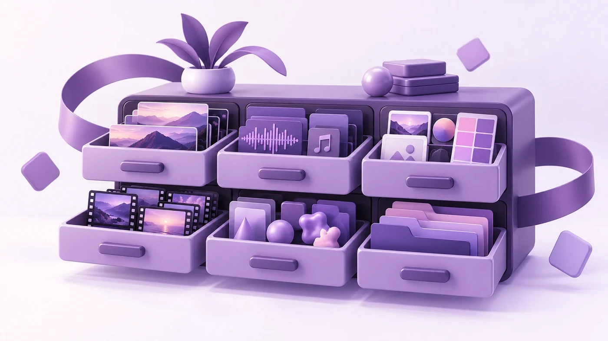

What to send me so the first cut is close

Most of what slows an edit down is decided before I open the files. It comes down to what arrived.
None of this is about the footage being good. It's about the right things coming with it, and about a few things you don't need to send at all.
What it's for, before what's in it
Where it runs and how long it has to be shape the edit more than the material does.
A ninety-second film for your homepage and a fifteen-second cut for paid social are different pieces. They open differently. On social you have about a second and a half before someone scrolls. On your own site people will give you longer. If you need both, say so at the start. Cutting one and adapting it afterwards takes longer and works less well.
If you don't know the length yet, say that. It changes how I assemble and it isn't a problem.
Two things get left out of briefs and both are cheap at the start:
- Whether it has to work with no sound. Trade show booths and event screens usually play silent on a loop, and so does most of a social feed. A video built for silence carries the information on screen instead of in the voiceover, and that changes the cut, not just the titles. I've made pieces that were never going to be heard at all.
- Which languages you need. Subtitles and full language versions in English, Portuguese and Spanish are straightforward while the project is open and awkward once it's closed and delivered.
Send everything, not the good bits
This is the one that costs the most time.
It's tempting to go through the rushes and send only the takes you liked. The parts I need are often the ones you'd cut. The second before someone starts speaking. The pause where they look down. The twelve seconds while the camera settles.
Same with b-roll you think is boring. An empty corridor isn't interesting on its own and it will probably save a transition.
Send the whole card. I don't mind the volume.
Originals, not exports
Send the files as they came off the camera. Not a compressed copy, not something that's been through WhatsApp, and ideally not a re-export from another edit.
Every export throws away data. You won't see it watching the file. You will see it once the shot is graded, slowed down, or scaled up for a vertical crop.
If a compressed copy is all that exists, that's workable. Just say so early.
The audio is probably a separate file
If anyone wore a lav mic, or there was a boom, those recordings usually live as separate files. Send them. Camera audio is a backup. Dialogue is what viewers forgive least.
If you're not sure whether separate audio exists, ask whoever shot it.
If more than one camera was running, send all of them untrimmed, including the parts where nothing is happening. Overlapping camera audio is what I sync them by, and trimmed clips are what make that a manual job instead of an automatic one.
Brand things
Each of these takes five minutes to send and much longer to reconstruct:
- A vector logo. SVG, AI or EPS. Not a PNG pulled off the website.
- Your fonts, if the license covers sharing them, and your color codes or the brand guide.
- Two or three references, with a sentence about what you like in them. A link on its own only tells me you liked it.
If there's a style you actively don't want, say that too. It's just as useful.
If titles, lower-thirds or a logo animation are going to be needed, the brand guide is what they get built from, so it's worth sending even when it feels like overkill for one video.
Music is my side of it
You don't need to find a track, and you don't need to buy one.
I work from paid premium libraries, so the searching is mine and the license comes with the delivery, cleared for the platforms the video is going to run on. All I need is a direction, and vague is fine. "Calm, no vocals, nothing corporate" is enough to work from.
Two exceptions worth flagging early:
- If you already have a track you're attached to, send the license rather than the file. A license bought for one film often doesn't cover the social versions of it, and that tends to surface the week you're meant to publish.
- If it's a commercial piece of music, something with a name you'd recognize, assume it isn't clearable at a sensible price and tell me what you like about it instead. I can usually get close.
Gaps in the footage are not a problem
People delay sending material because a shot is missing. It doesn't need to hold anything up.
I license stock footage from the same premium libraries, so a missing establishing shot, an aerial nobody had the budget to fly, or a scene that was never filmed can usually be covered. Plenty of the corporate work I do is built mostly from licensed material and the client's own existing assets, with no shoot at all.
Tell me what's missing rather than waiting until it exists.
Who signs it off
One person with final say, or a group who send their notes together. Five people replying separately, each to a different version, is what adds days to a project.
The short version
- Everything, not a selection
- Unexported, straight off the card
- Separate audio, and every camera, untrimmed
- A vector logo, fonts, colors
- Length and platform, even roughly
- Whether it plays silent, and in which languages
- A couple of references, with a sentence each
- One name for approvals
Music, stock and the licensing behind both are mine to deal with. Send the rest and the first cut will be close enough to talk about properly.
← All posts